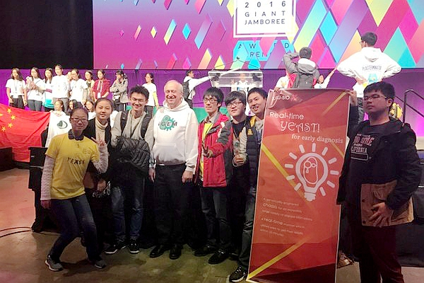
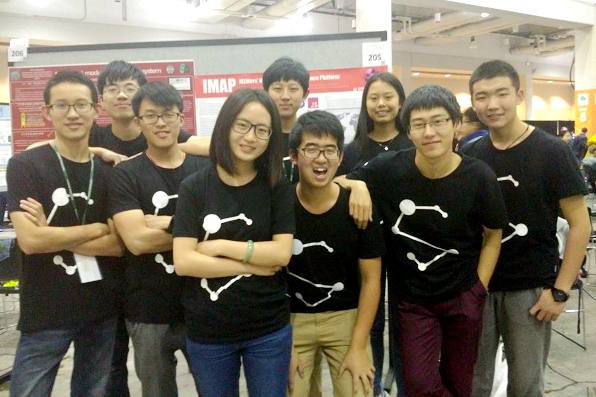
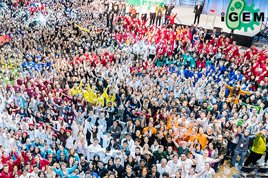

上海交通大学团队再度斩获国际基因工程机器设计大赛金牌
近日，合成生物学国际顶尖赛事——国际遗传工程机器设计竞赛（International Genetically Engineered Machine Competition，iGEM）2016全球总决赛在美国波士顿海因斯会议中心落幕， 上海交通大学的两支参赛队伍SJTU-Software和SJTU-BioX-Shanghai再度获得金牌。
SJTU-Software团队由生命科学技术学院、电子信息与电气工程学院、外国语学院、媒体与设计学院、上海交大-巴黎高科卓越工程师学院、致远学院的15名本科生组成，由生命科学技术学院韦朝春、欧竑宇、陈峰共同担任指导老师。 参赛项目名为“iMAP”，这个项目是专门为参加iGEM的比赛队伍设计的web端综合性平台。每个参加iGEM比赛的队伍信息都会自动收集到平台中，并标注在地图上，包括项目的名字、简介、思路，向所有队伍开放。如果用户对某一个队伍的项目感兴趣，就可以通过平台上的聊天功能直接联系到该队伍的队长，进行更深入的交流。另外，他们还开发了在地图上快速发布、参与活动的功能，以方便队伍间的联系。另外，平台中的文件共享功能不但在队伍内部轻松实现文件传递，也可以方便队伍之间的文件交流，新一届的参赛队伍通过查看往年队伍互相交流的文件深入了解他们的项目。此外，他们还针对生物实验室开发了实验室管理功能，包括项目管理和耗材管理。项目管理中，队长可以布置任务分给队员，队员可以查看自己的任务及总任务的完成度；耗材管理中，每个队员都可以添加、编辑试剂和器材。“iMAP”为iGEM的参赛队伍提供了互相交流和项目管理的平台，搭建了一个独立的iGEM社区，为所有参赛队员提供服务。这个平台新颖的设计思路获得了评委们的一直好评，在海报展示和现场答辩环节获得了评委们的极高评价。 评委们还针对iMAP平台的设计和推广给出了一些建议，并希望继续将这一平台发展下去。
SJTU-BioX-Shanghai团队依托于Bio-X中心，指导老师为贺林院士和马钢副教授，今年的顾问为王毓舒老师、谢志平特别研究员和2015届iGEM队员殷灿，成员由生命科学技术学院、生物医学工程学院、电子信息员与电气工程学院、致远学院的9名本科生组成。 参赛项目为Vesatile Yeast Interface - for disease diagnosis（用于疾病诊断的多功能酵母接口），即通过合成生物学的方法构建用于检测生理样本中疾病标志物的酵母菌株。疾病，尤其是重大恶性疾病的早期诊断是医学基础和临床研究中面临的最难和最迫切的问题。本届团队针对糖尿病与嗜铬细胞瘤两种疾病的生物标志物构建了快速的家用酵母检测器，其能在30秒内根据生物标志物的浓度发出肉眼可见的冷光，并且解决了生物检测器的保存与运输的问题，为这两大疾病早期诊断提供了快速和经济实惠的解决方案，并为今后更多疾病的早期诊断提供了思路和细胞底盘。本次项目由队长赖伊杰通过自身经历与查阅文献独立提出，并联合其他队员一道对项目的所有实验部分进行了详细可行的设计，为了缩短检测时间，他决定避开转录机制，另辟蹊径地利用酵母内cAMP的变化构建生物传感器，并利用G蛋白偶联受体的模式化特点构建了可替换元件的检测信号系统，让同一种酵母底盘可以提供替换受体而检测不同的疾病标志物，同时创新性地提出利用冻干的方法来制作酵母生物检测器，便于运输储存，利于成果转化。队员们还基于冻干酵母活化过程中活性的变化与cAMP和发光强度的关系建立了数学模型，并成功拟合了实验数据，为未来产品的应用提供了模型指导；另外，团队还扩展了项目的外延，从法律、安全、伦理的角度论证了项目的合理性，在做科研的同时，队员们还注重社会效益，调研了项目的公众接受度，向大众普及了合成生物学。本项目从载体构建、酵母工程菌功能验证、 社会实践、数学建模、宣传设计与网站建设等多方面开展联合攻关，每个阶段均成功实现，最终在iGEM决赛中完美收官。
iGEM（International Genetically Engineered Machine Competition）国际基因机器设计大赛是美国麻省理工学院（MIT）于2004年发起的一个大学生层面的有关合成生物学的竞赛活动，发展至今已是合成生物学（Synthetic Biology）领域的最高国际性学术竞赛，同时也是涉及数学、物理、电子、计算机等领域交叉合作的跨学科竞赛，后成立专门委员会管理。iGEM要求学生自主选题，设计并构建生物系统在工程菌中实现表达和操控，旨在锻炼学生的自主创新和团队协作能力，同时培养其对科学的热情。该项竞赛也为不同国家、不同专业的大学生提供了一个相互交流的国际舞台。今年的iGEM竞赛吸引了全球304支队伍参赛，竞争相当激烈，其中包括了麻省理工学院、哈佛大学、剑桥大学、海德堡大学等世界一流学府的代表队，国内共计52支代表队参赛。 该项赛事学术价值极高，每年均有参赛项目被Science、Nature等顶级期刊收录。此外，iGEM的比赛内容还包括各种各样的非实验任务，例如设计介绍项目的海报、开展以推广合成生物学为目的的社会活动等，对参赛者的综合能力要求非常高。